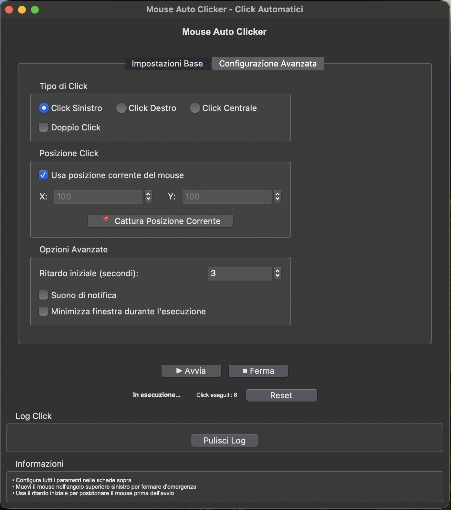
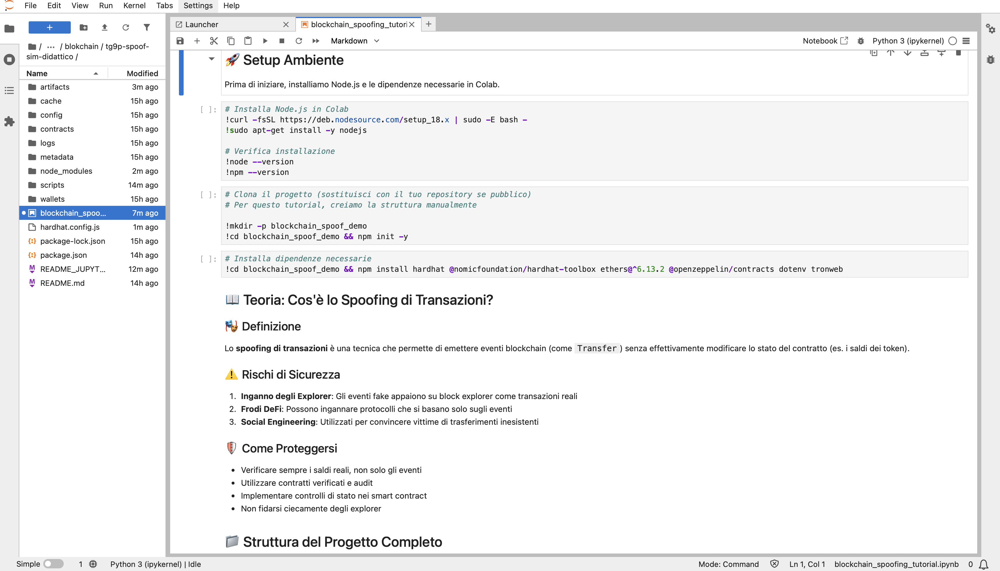
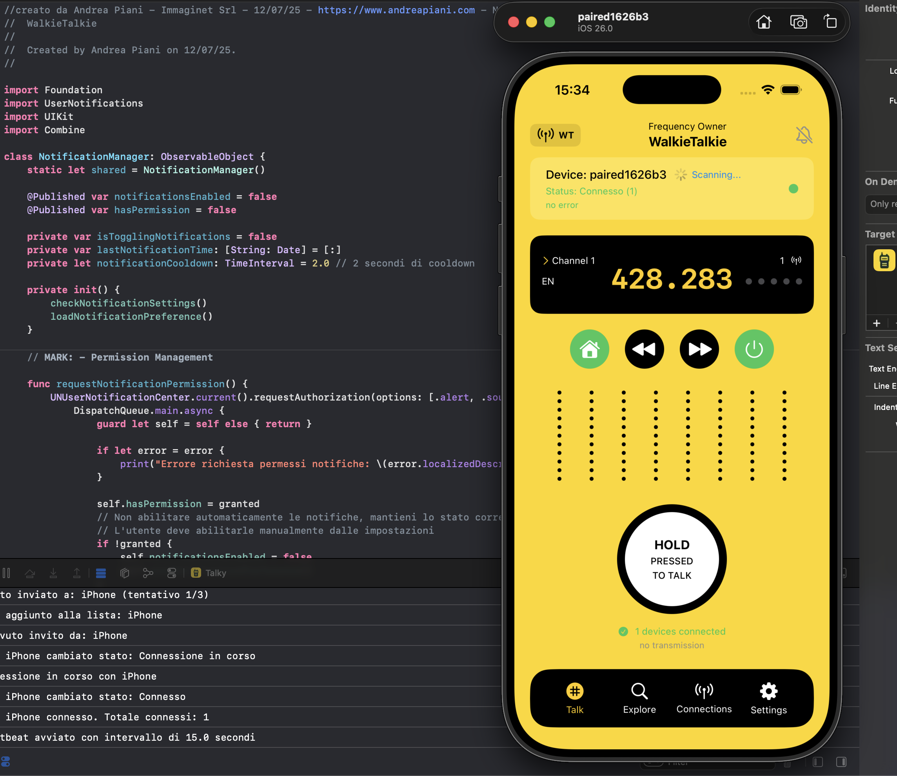

EA MT5 risk-controlled grid
stack: MQL5 · broker FCA · VPS
"Grid con cap drawdown 15%, circuit breaker su volatilità news, alert Telegram per ogni trade. Backtest tick-level 2020-2024, walk-forward."→ Voglio un EA simile su misura
Expert Advisor MetaTrader, strategie Pinescript per TradingView, algotrading Python su Binance, Bybit, Interactive Brokers. Backtest rigoroso, risk management, deploy VPS. Codice tuo dal giorno 1, repo Git intestato a te.
15 anni di software. Lavoro 1:1 col trader, niente PM intermedi. Il desk dei dev che capiscono di mercati — e ti dicono la verità quando una strategia non funziona.
"Bot certificato 1.200% profitto annuo, ti mostro la live!" Quasi sempre è martingala mascherata: chiude tutto in profitto per mesi, poi un drawdown del 100%. Niente equity curve infinitamente crescente è naturale.
Il backtest senza out-of-sample, walk-forward analysis e stress test Monte Carlo è solo overfit costoso. La strategia perfetta sul 2023 può perdere sistematicamente nel 2024. Validare prima, non dopo aver acceso il bot live.
Nessun stop loss, nessun cap drawdown, nessun position sizing. Trade aperti a casaccio, lotto fisso, niente circuit breaker. La prima settimana di volatilità news (NFP, FOMC) ti porta a margin call. Il risk module è il vero EA — non l'entry.
Broker offshore non regolamentato, spread variabili 5x in news, requote sistematici, slippage favorevole solo al broker. Il miglior bot del mondo non sopravvive a un broker scadente. Servono broker CONSOB/FCA/ASIC o exchange seri (Binance, IB).
"Recupero raddoppiando, non si perde mai." Falso. Una sequenza di 8-10 perdite consecutive su martingala è statisticamente certa nel lungo periodo, e il drawdown finale è -100%. Equity smooth a 6 zeri di Telegram = sopravvissuto. Il cimitero martingala è lo standard.
Risultato? Conto bruciato in 3-6 mesi
e zero learning su cosa avrebbe funzionato davvero.
Non esiste "il miglior linguaggio per bot trading". Esiste lo stack giusto per il tuo broker, mercato e frequenza. Nello Strategy Brief ti dico io quale ha senso per te.
Linguaggio TradingView. Strategie + indicatori, alert webhook verso broker o Telegram. Backtest integrato 5+ anni.
MetaTrader 4 (legacy) e 5. Standard de facto per forex retail in Italia/Europa. Tester integrato tick-level.
Massima flessibilità: API exchange crypto (Binance, Bybit, OKX), Interactive Brokers per equities/futures, ML/data science.
Linguaggio C# su piattaforma cTrader. Alternativa professional a MT5, broker top-tier (IC Markets, Pepperstone).
Nessun claim performance ROI: il software è separato dalla strategia. Mostro logica, struttura, qualità del codice — il resto è scelta del trader e mercato.

stack: MQL5 · broker FCA · VPS
"Grid con cap drawdown 15%, circuit breaker su volatilità news, alert Telegram per ogni trade. Backtest tick-level 2020-2024, walk-forward."→ Voglio un EA simile su misura

stack: Pinescript v5 · multi-asset · webhook
"Indicatore + strategy con backtest 5 anni su TradingView, alert webhook verso broker via 3commas. Multi-timeframe filter, no overfit."→ Pinescript su misura per il mio chart

stack: Python · ccxt · Binance · Hetzner
"DCA progressivo su trigger, take profit a ladder 3 step, hard stop su drawdown. Logging Postgres, dashboard equity live."→ Bot Python custom su exchange
Tutto incluso in un preventivo scope-based scritto dopo lo Strategy Brief. Costi infrastrutturali reali separati e trasparenti (VPS €15-30/mese se MT, €5-15/mese se Python, TradingView Premium se Pinescript). Codice e repo Git tuoi dal giorno dell'acconto.
Dal momento dell'acconto: repository Git intestato a te col sorgente. Anche se domani sparisco da internet, hai codice, doc, asset, certificati VPS. Qualunque altro dev può continuare.
Per 12 mesi dal go-live, qualunque bug nel codice che ho scritto lo sistemo gratis. Crash MT5, errori API exchange, edge case in produzione. Email a me, lo aggiusto. Senza fatture extra.
Quando vuoi passare il bot a un team interno o a un altro dev: handover gratuito, manuale tecnico aggiornato, 1h di tour video col team nuovo. Niente lock-in mai.
Non ti vendo numeri, ti vendo codice testato e risk management implementato bene. La strategia la scegli tu, io la implemento correttamente. Il trading comporta rischi, nessun bot garantisce profitti.
Nessun preventivo standard. Mi descrivi il tuo setup in 5 step, valuto io fattibilità tecnica, broker compatibility, stack ottimale, e ti mando una proposta scritta in 48h.
Cosa ricevi nel Brief Report:
Apri il form qui sopra. 5 step, 4 minuti. Entro 48h ricevi un Brief Report scritto con fattibilità tecnica, stack consigliato, timeline backtest+live, vincoli broker, preventivo indicativo. Senza impegno.
vai al briefScrivimi su WhatsApp, fissiamo 30 minuti. Mi racconti la strategia, io ti dico se ha senso automatizzarla adesso, quale stack scegliere, e quali vincoli broker considerare. Niente pitch, niente vendita aggressiva.
scrivimi su whatsappAlgotrading, automazioni, scraping, data pipeline, ML. Base ideale per bot Python su exchange.
Backend dashboard equity, webhook TradingView, microservizi realtime per bot trading.
Integrazione API broker, exchange, calendari economici, market data feed.
Se hai un'idea fintech che richiede MVP + bot trading + dashboard, parti da qui.
App iOS/Android companion per monitor bot, alert push, dashboard equity dal cellulare.
Software gestionale per fund, prop trading firm, family office: trade journal, reporting, P&L.
Workflow AI per analisi news, sentiment, sommarizzazione earnings call, alert intelligenti.
Indicatori Pinescript, template MQL5, esempi Python su GitHub. Codice pubblico riusabile.